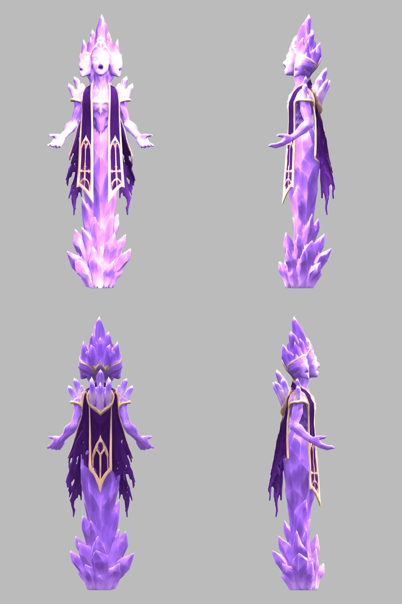

Your export of the Hollow Heart champion, with a floating skeleton and 11 moves added by hand. Its timings are the game's. Pick a move, drag to turn it, and judge the float and the hit. Nothing in the game has changed.
Idle or Walk sets what it does between attacks (it has no legs, so its walk is a drift), and Going turns it on the spot. An Action plays over it and repeats until you press it again. Hurt plays on top of anything. Death leaves it standing on the floor as a dead crystal: press it again and it spawns back in. The bar names the part of the move that is playing, in the game's own words. Enraged is its state under half health: it stays on over every move until you switch it off, and it drifts faster.

All three faces came through: the front one singing, and one at each side, about 80 degrees round. Nothing was doubled and nothing had to be removed, so you do not need to generate it again. It has no legs: the body runs down into a pillar and a cluster of crystals, so it floats. I cut the head free at the neck and closed both sides of the cut, so the head can turn all the way round and bring each face to the front.
| Move | What it does | Timing |
|---|---|---|
| Idle | It hangs in the air and hums: a slow rise and fall, the arms breathing open and shut, the pillar swaying under it. Each voice takes its turn: the head turns to bring the left face to the front, back to the middle, then the right face. | 6 s loop |
| Walk | A drift. It leans into the move with the front face held level, the arms swept a little back, and the pillar, the stole and the cape trailing behind it. It has no legs, so your no 外八 rule has nothing to check here. | Game: 1.0 u/s. 2 s loop. Enraged: 1.15 u/s, the same drift played faster. |
| Turn left, turn right | Banks into the turn, the head leading, the pillar swinging round after it. | 100° a second (my number: the game turns it instantly) |
| Shard Hymn | It rises and leans back, the hands come together before the chest and the front face lifts to sing. Then it lunges and throws both arms forward and apart, and five shards fly out in a fan. It drifts back and settles. | Game: gathers for the 1.0 s cone warning (r 6 u, 28° each side), cast 2.5 frames landing on the warning's end, held 3 frames, recoil 0.2 s, settle 0.6 s. Five shards 12° apart fly at 5.4 u/s for 8.5 u. The hero stands 4.5 u off. |
| Discord | It rises, the arms come up and out, and the head begins to turn, faster and faster, until the three faces blur into one: two full turns. Then the head stops dead on the front face, the arms are thrown out and down, the whole body drops, and the ring bursts round it. | Game: winds up for the 1.2 s ring warning (r 3.2 u round itself), burst 2.5 frames landing on the warning's end, held 3 frames, recoil 0.2 s, settle 0.6 s. The hero stands 2.6 u off. |
| Rage | It folds its arms across its chest, bows and sinks. Then it shoots up with the arms thrown wide and high, and each voice screams in turn: the head snaps to the left face, to the right face, and back to the front. The Enraged state stays on after it: drawn up, the arms half raised, the head twitching, the heart burning. | Mine: 1.6 s. The game does not stop it: below half health it glows, drifts 15 percent faster and its moves come back 30 percent sooner. |
| Hurt | The chest and the head flinch away and the arms jolt. Plays on top of any move. | 0.42 s |
| Heavy hit | Knocked back through the air with the body tipped back, the arms flung up and the pillar swinging forward under it. It dips almost to the floor, catches itself, the head shakes once and it floats back to its place. | 1.15 s |
| Spawn | Grows from the floor standing like a crystal, arms folded and the heads bowed. Then it lifts off, unfolds its arms, raises its faces and sings its first note. | Game: grow in 7 frames, then a 1.6 s entrance. The folded arms and the first note are mine. |
| Death | The song breaks. A jolt, the float falters and it drops: the crystals at its foot strike the floor and it stands there. Then the body sags forward and to one side, the arms fall and hang, and the head rolls onto its shoulder. It ends standing, a dead crystal: the heart goes out and the colour drains from it. | 2.6 s, then it stays standing |
| What was measured, on every frame of every move | Result |
|---|---|
| Loops that jump when they restart (idle, walk, both turns, the enraged state) | 0 |
| Lowest point of the body under the floor | 13 mm at worst: two points of the foot crystals while it stands on the floor in the spawn. 6 mm where it lands in the death. Nothing in the floating moves. |
| The float | The foot crystals hang 0.15 to 0.2 u over the floor in the idle and the walk. The lowest they come while it floats is 0.05 u, in the drop of the Discord burst and in the dip of the heavy hit. |
| The three faces | Each side face sits 80 degrees round from the front one. The idle and the rage turn the head exactly that far, so a face ends looking straight ahead. |
| The neck | Cut along the groove under the jaws, both sides closed. Looked at from the front, the back and the side with the head turned 80 degrees and in the middle of the spin: no gap and no wrung skin. |
| The arms | Each arm leaves the body at one clean ring under the shoulder plate and touches nothing else. Looked at from below with the arms raised wide: no torn skin. |
| The cloth and the pillar | The two strips of the stole, the cape (two joints) and the pillar (two joints) run as springs. They trail the body and swing after it stops. |
These numbers come from the model file. I checked the poses as still frames only: the cloud machine cannot play the page at full speed, so the float, the timing and the hit are yours to judge.